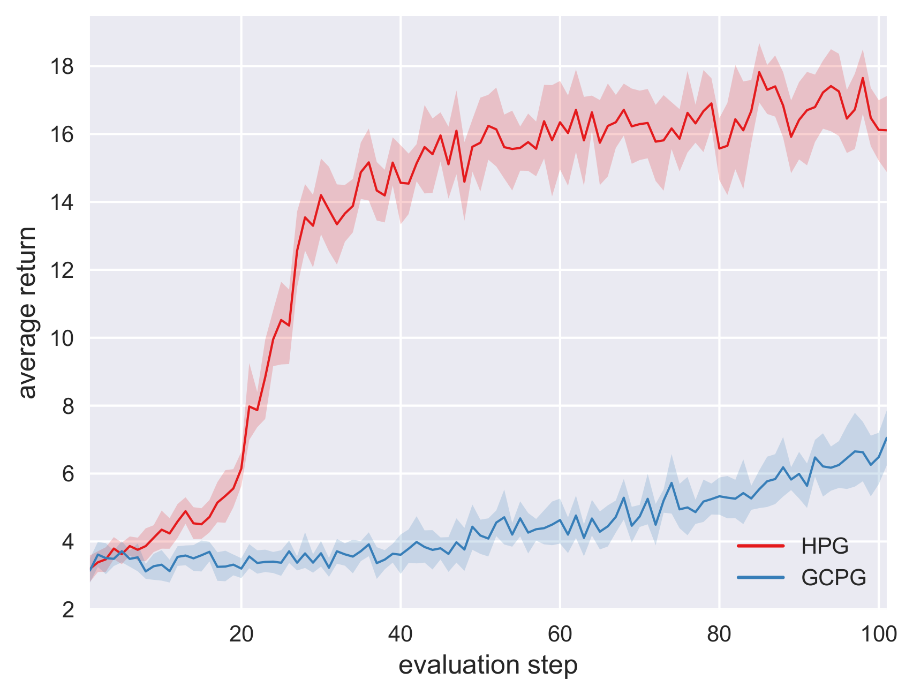
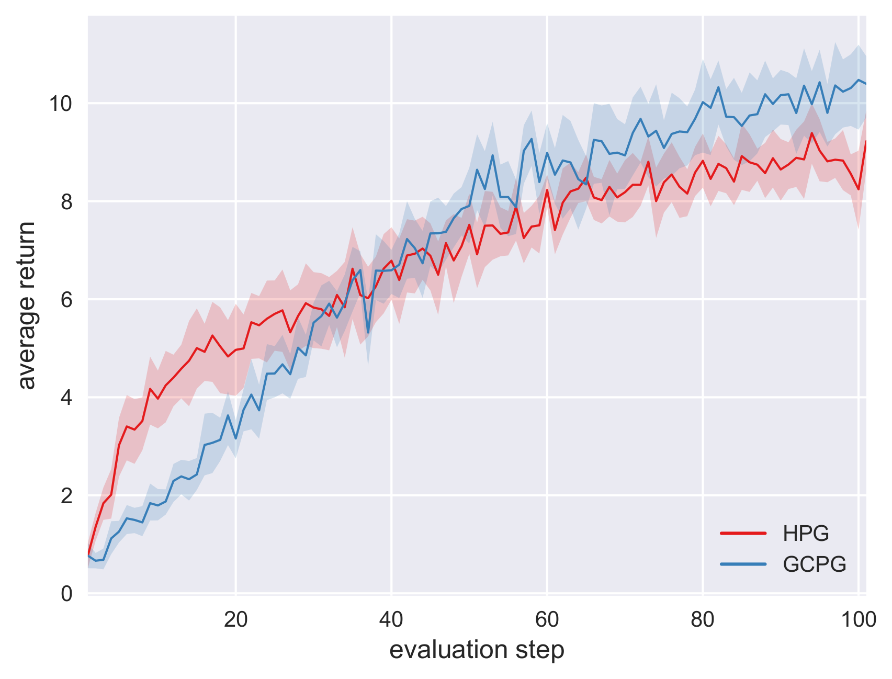

Hindsight policy gradients
A reinforcement learning agent that needs to pursue different goals across episodes requires a goal-conditional policy. In addition to their potential to generalize desirable behavior to unseen goals, such policies may also enable higher-level planning based on subgoals. In sparse-reward environments, the capacity to exploit information about the degree to which an arbitrary goal has been achieved while another goal was intended appears crucial to enable sample efficient learning. However, reinforcement learning agents have only recently been endowed with such capacity for hindsight. Our work demonstrates how hindsight can be introduced to policy gradient methods, generalizing this idea to a broad class of successful algorithms. Our experiments on a diverse selection of sparse-reward environments show that hindsight leads to a remarkable increase in sample efficiency.
Examples
The videos presented below illustrate the best agents (after the last training step) obtained using a goal-conditional policy gradient estimator (GCPG) or a hindsight policy gradient estimator (HPG) for two environments: FetchPush and Ms. Pac-man. Please see the paper for more details.
FetchPush
In a simulation, a robotic arm is required to push a randomly placed object towards a randomly chosen position.

Ms. Pac-man
In this variant of the homonymous game for ATARI 2600, the goal is to reach a randomly chosen position while avoiding enemies.
Important: In this experiment, HPG has been handicapped by harsh active goal subsampling. Please see the paper for more details.
